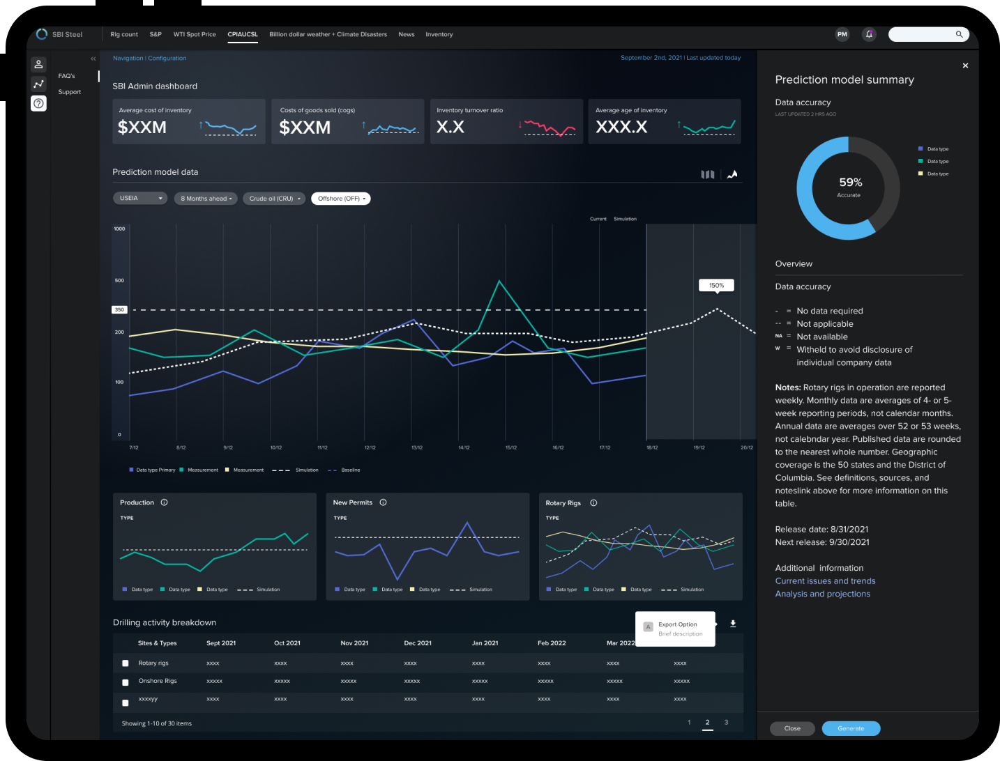
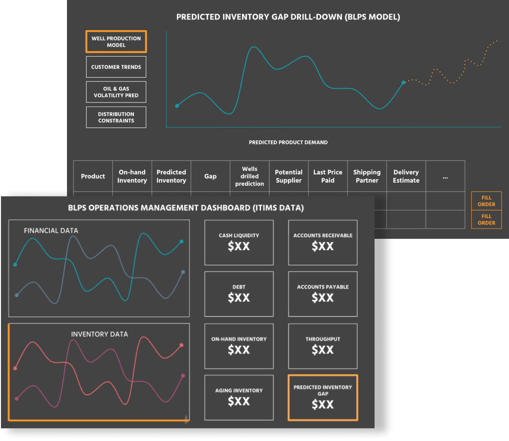
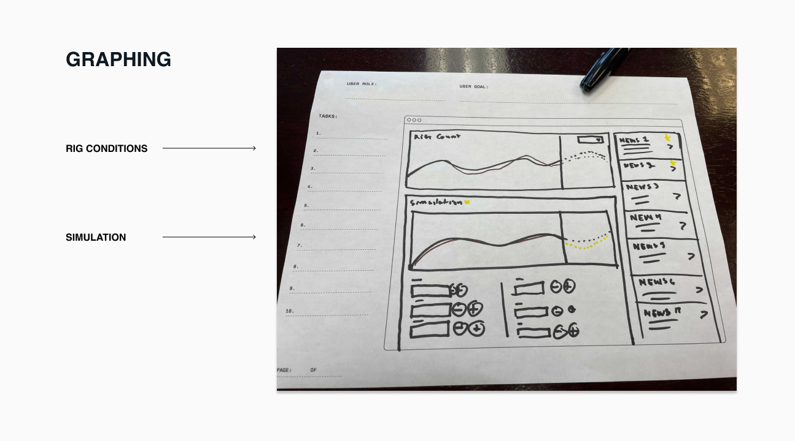
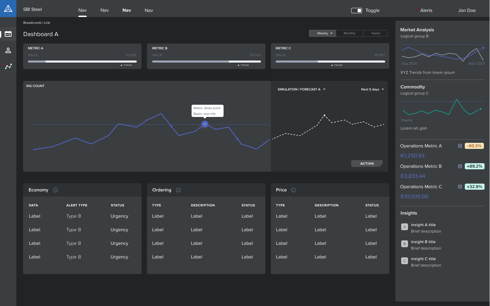
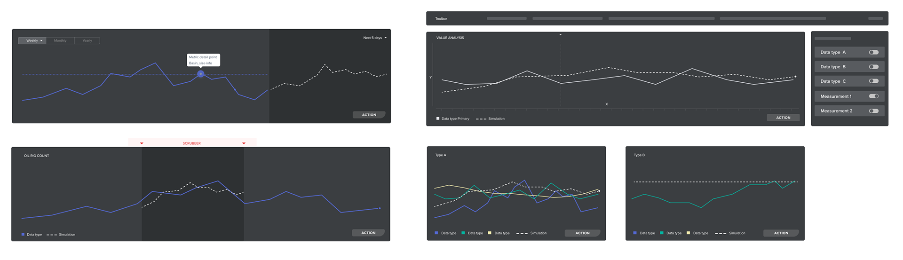
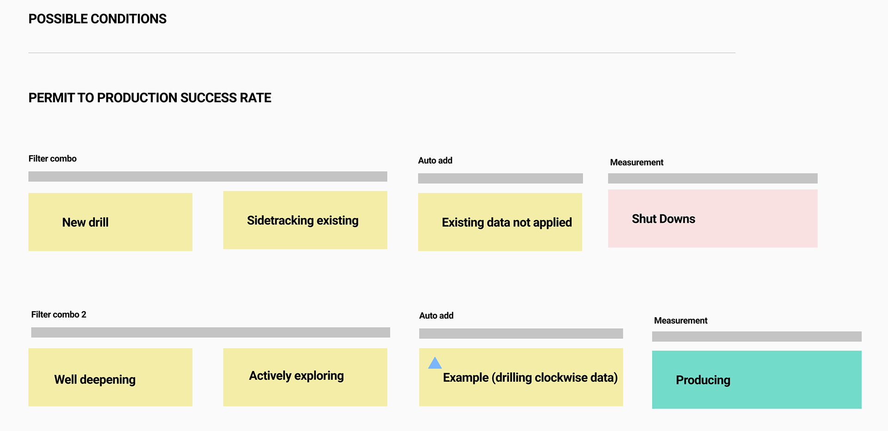
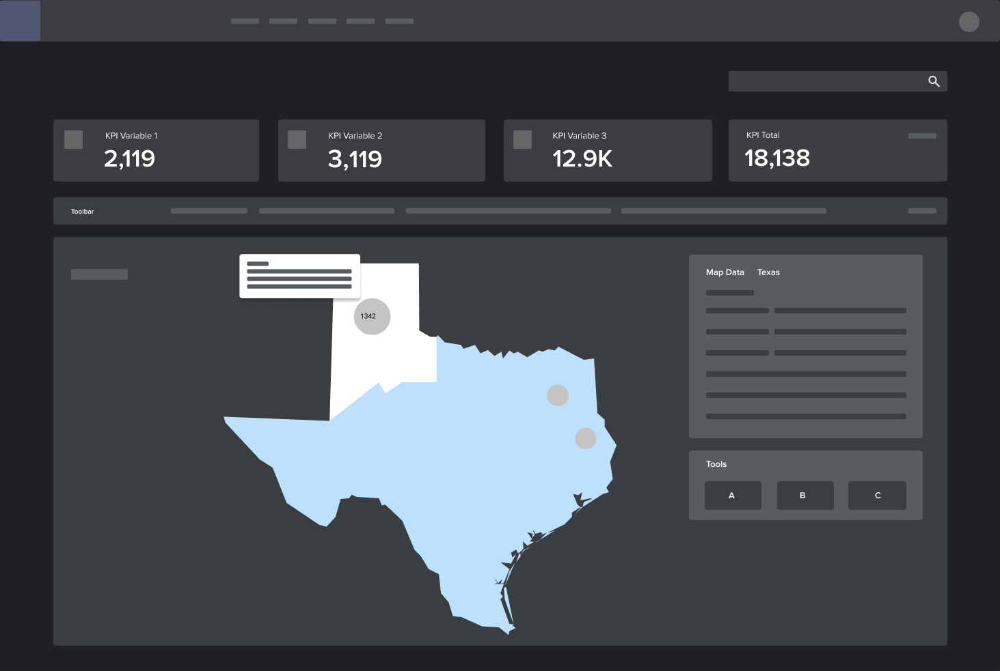
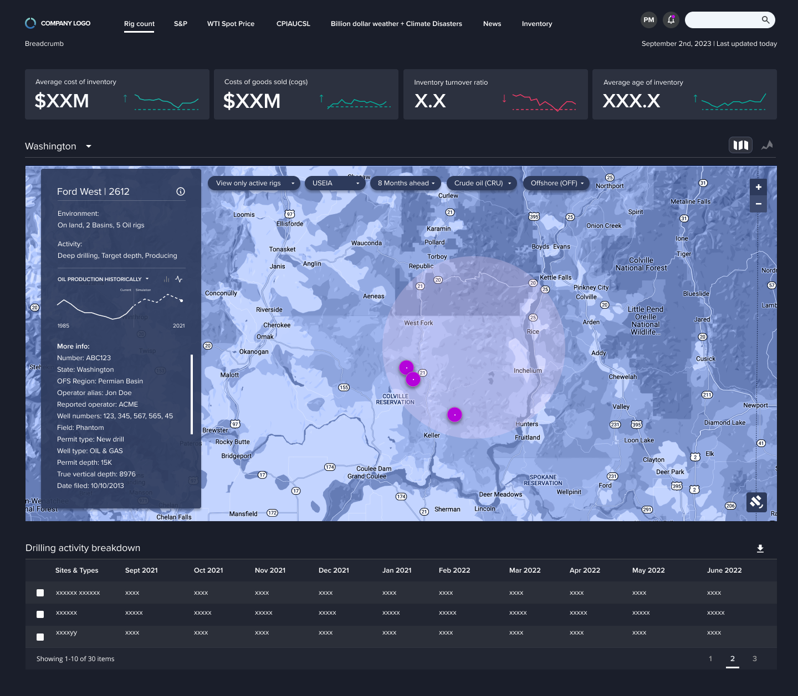

SBI · Oil & gas
Forecasting for sales and inventory decisions.
The users were the people making the business decisions: SBI’s CEO, executives, and sales stakeholders. I designed the dashboard experience around their forecasting questions—how equipment was being used, when replacement parts might be needed, and what that could mean for sales and inventory.

What shipped
V1 brought prediction-model information, inventory and purchasing views, and scenario exploration into a shared dashboard. The design work focused on helping leadership understand the information behind a forecast and connect it to a planning decision.
The team shipped V1 in six months. My focus was to make the relationship between operating activity, forecasts, and inventory clear enough for leadership to examine and discuss.
The forecasting question behind the dashboard
SBI could use rig activity and hardware-sensor data, including publicly available operating data, to assess equipment condition and anticipate demand for replacement parts. For leadership, those two questions were connected: an estimate of remaining equipment life could inform what to stock and when to buy it.
When might this equipment need replacing—and what should we have in stock when it does?
What I owned
- Research into inventory turnover, market indicators, competitor activity, and purchasing needs to inform the dashboard structure.
- The information architecture connecting operating signals, forecasts, and the sales and inventory questions leadership needed to explore.
- Dashboard and chart explorations with executives, using rig count as a shared reference for discussing activity and forecasts.
- Filter interactions, map-based context, and the visual system for a dashboard with dense operational and financial information.
01
Bring the forecast into the business decision
A forecast needed to be considered alongside inventory, purchasing, and financial information. The dashboard brought these views together so executives and sales stakeholders could examine potential demand in the context of stock on hand and the business’s purchasing position.

02
From equipment use to replacement-part demand
A drill bit makes the opportunity concrete. Usage data could help estimate wear and remaining useful life. That estimate could then inform when a replacement might be needed—and when SBI’s leadership should consider buying stock. Leadership could weigh that estimate alongside current inventory and purchasing information.
- 01
Read the operating data
Use rig activity and equipment-usage signals as inputs.
- 02
Estimate equipment life
Assess wear and when a part might need replacement.
- 03
Anticipate demand
Consider the replacement parts that may be needed.
- 04
Plan the stock
Leadership weighs the forecast alongside inventory and purchasing information.
03
Separate what needs attention from what needs watching
The real-time section of the application map separated two jobs. “Action Flow” grouped alerts and recommendations. “My Indicators” grouped KPIs, market prices, market activity, and competitor information. That distinction shaped how I organized the dashboard: give leadership a place to notice an issue, then the context to examine what it could mean for sales, purchasing, and inventory.
What needs attention—and what should we keep watching?
Bring attention to a change
- Alerts
- Recommendations
The map gives items that may need a response their own route.
Keep the business context close
- KPI indicators
- Market prices
- Market activity
- Competitor information
A separate route supports monitoring and investigation.
An alert raises a question. The surrounding indicators help leadership judge what it means before making a purchasing or inventory decision.
04
Use rig activity as a shared reference
Workshops with executives explored how current rig activity and simulated conditions could be understood together. Rig count remained a consistent reference across the layouts. Paper sketches developed into forecast bars, summary measures, and inventory and purchasing views.



05
Include the data a filter combination needs
Some requested views depended on additional operating data. The filter exploration mapped those dependencies so a selection could include the inputs needed for the requested measure. The design question was how to support that relationship without asking stakeholders to reconstruct it themselves.
The diagram records the original filter terminology and relationships. It illustrates the interaction logic; it is not a specification of how equipment life was calculated.

06
Keep location and operating context with the forecast
The map explorations brought regional measures, well details, and drilling activity into the planning view. Alongside the forecasts, that context gave stakeholders another way to examine where activity and potential equipment demand were concentrated.

